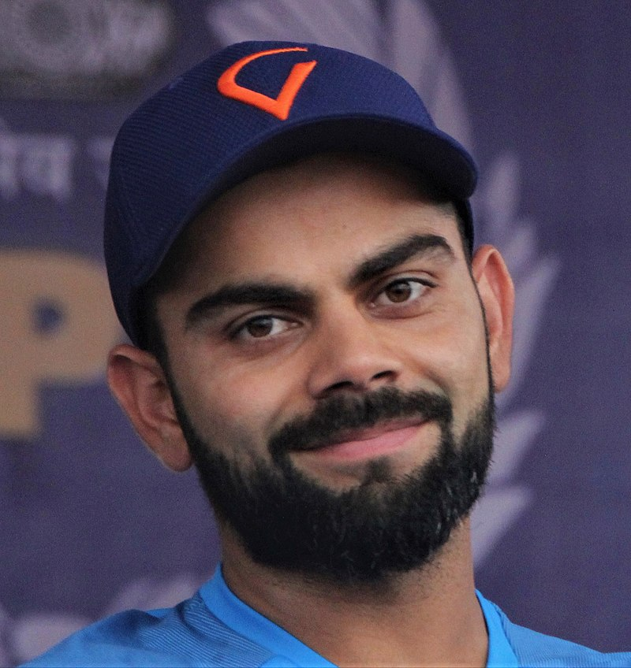

_(cropped).jpg)
Virat Kohli (Hindi pronunciation: [ʋɪˈɾɑːʈ ˈkoːɦli] ⓘ; born 5 November 1988) is an Indian international cricketer and the former captain of the Indian national cricket team. He is a right-handed batsman and an occasional medium-fast bowler. He currently represents Royal Challengers Bangalore in the IPL and Delhi in domestic cricket. Kohli is widely regarded as one of the greatest batsmen in the history of cricket and the best of the 21st century.[3] He holds the record as the highest run-scorer in T20I and IPL, ranks third in ODI, and stands as the fourth-highest in international cricket.[4] He also holds the record for scoring the most centuries in ODI cricket and stands second in the list of most international centuries scored. Kohli was a member of the Indian team that won the 2011 Cricket World Cup, 2013 ICC Champions Trophy, and captained India to win the ICC Test mace three consecutive times in 2017, 2018, and 2019.[5]
Virat Kohli was born on 5 November 1988 in Delhi into a Punjabi Hindu family. His father, Prem Nath Kohli, worked as a criminal lawyer, and his mother, Saroj Kohli, served as a housewife. He has an older brother, Vikas, and an older sister, Bhawna.[8] Kohli's formative years were spent in Uttam Nagar. He commenced his early education at Vishal Bharti Public School.[9] According to his family, Kohli exhibited an early affinity for cricket as a mere three-year-old. He would pick up a cricket bat, display natural skill, and request his father to bowl to him.